← 返回文章列表
Microsoft 環境 ・ 撰寫日期：2026 年 11 月 19 日 ・ 智日未來科技 WisdomDaytech
Microsoft 環境自動化怎麼選:VBA、Make.com、Copilot 的資料流向與風險
在 Microsoft 辦公環境做自動化,常見三個選項:VBA、Make.com 與 Copilot。三者能力重疊,但資料流向與風險完全不同 。選工具之前,先問一個問題:「我的資料會經過誰?」
目錄 先問:資料會經過誰? VBA:資料不出本機的老將 Make.com:好串接,但資料會經過第三方雲端 Copilot:在熟悉的 Office 內即時輔助 決策樹:該用哪一個? 工作應用案例 常見問題 FAQ 先問:資料會經過誰?
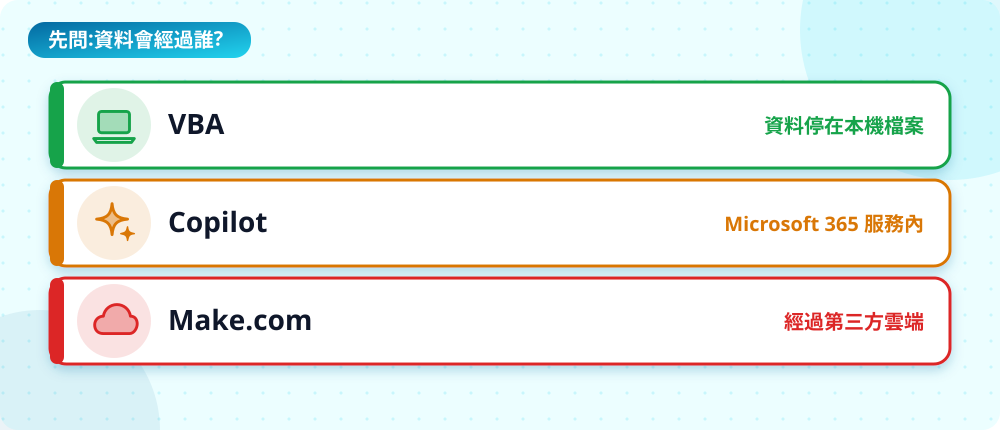
先問:資料會經過誰?(示意圖) 由「資料停留範圍」從小到大排序:VBA 在你的本機檔案內執行;Copilot 在 Microsoft 365 的服務內處理,實際資料處理方式依你的授權與管理設定,請以 Microsoft 官方說明為準;Make.com 則是第三方雲端,資料會經過它的平台。範圍越大,越需要審視資料政策與權限。
VBA:資料不出本機的老將
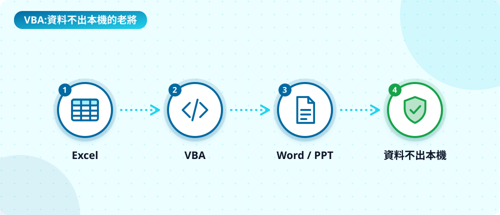
VBA:資料不出本機的老將(示意圖) VBA 能在 Excel、Word、PowerPoint 之間搬資料、批次產出文件、自動套版與寄信,處理過程在你的電腦上完成 。現在可請 AI 依需求(用假資料描述欄位)產生 VBA 並解釋,你只需測試與微調。注意巨集本身有安全風險:只啟用來源可信的巨集,執行前先備份原檔。
Make.com:好串接,但資料會經過第三方雲端
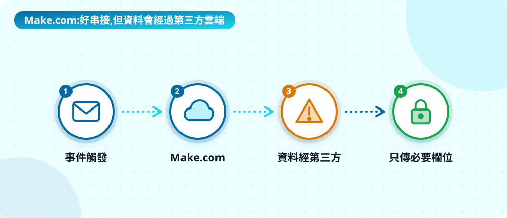
Make.com:好串接,但資料會經過第三方雲端(示意圖) Make.com 以視覺化方式串接各種雲端服務,可定時或依事件觸發,適合「收到資料 → 判斷 → 產出 → 通知」的流程。代價是流程中的資料會經過第三方平台 ,所以要審視欄位、避免傳送不必要的個資,並妥善管理連線帳號與權限。
Copilot:在熟悉的 Office 內即時輔助
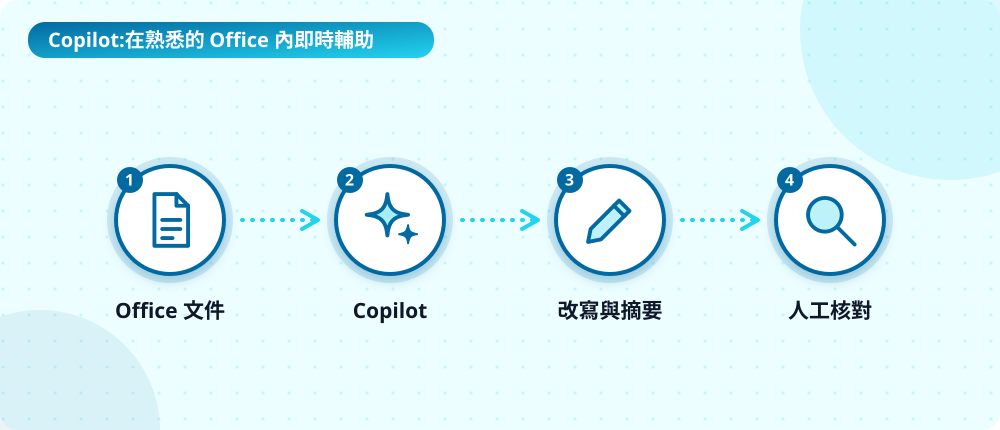
Copilot:在熟悉的 Office 內即時輔助(示意圖) Copilot 內建在 Microsoft 365 應用中,適合臨時的改寫、摘要、依資料產出簡報或分析草稿。它擅長「一次性、需要人在旁邊看的任務」,不適合取代固定、可重複的批次流程。引用的數字與結論仍需人工核對。
決策樹:該用哪一個?
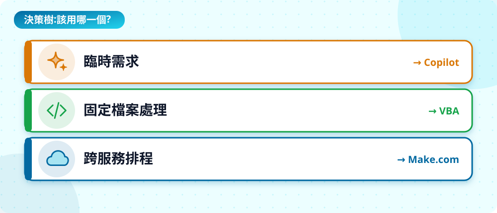
決策樹:該用哪一個?(示意圖) 先看任務型態:臨時需求用 Copilot;固定的 Office 檔案處理用 VBA;跨服務、需排程或觸發的流程用 Make.com;只要涉及敏感資料,先脫敏並保留人工確認 ,再談自動化。
工作應用案例 案例 1:月報自動套版(VBA) 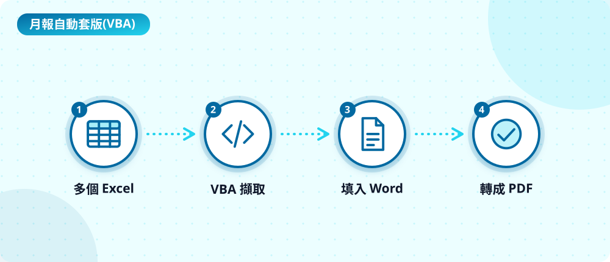
案例 1:月報自動套版(VBA)(流程圖) 用 VBA 從多個 Excel 擷取數字,批次填入 Word 月報範本並轉成 PDF,全程在本機完成。
案例 2:簡報數據自動更新 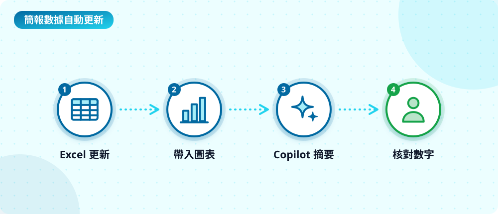
案例 2:簡報數據自動更新(流程圖) Excel 數字更新後,自動帶入簡報圖表,並由 Copilot 協助撰寫重點摘要,簡報者再核對數字。
案例 3:信件進線自動整理(Make.com) 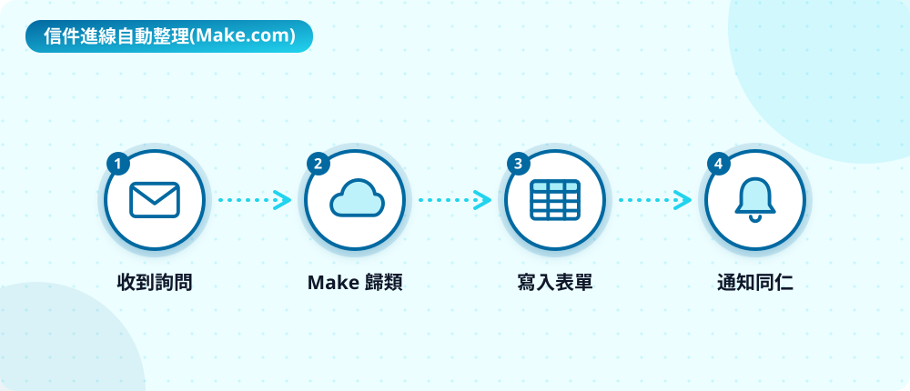
案例 3:信件進線自動整理(Make.com)(流程圖) 把收到的詢問歸類、寫入表單並通知負責同仁;只傳送主旨與分類所需片段,不傳完整附件與個資。
常見問題 FAQ 沒學過 VBA 能學嗎? 可以,借助 AI 產生並解釋程式碼,重點在測試與驗證。
Copilot 和 ChatGPT 差在哪? Copilot 內建於 Microsoft 365 應用,可直接處理你的文件;實際功能與資料處理方式請依官方方案與管理設定為準。
自動化會不會誤刪資料? 會有風險,建議在副本測試、保留備份,重要動作保留人工確認。
Make.com 安全嗎? 取決於你傳送什麼資料與如何設定權限,建議只傳必要欄位並符合公司資料政策。
結語 選自動化工具不是比誰功能多,而是比資料流向與風險是否符合你的任務 。把敏感資料留在最小範圍內,臨時任務交給 Copilot、固定批次交給 VBA、跨服務流程交給 Make.com,是最務實的分工。更進一步的企業級流程,可閱讀Copilot Studio × Power Automate 。
參考資料 延伸閱讀
AI 軟體開發 ・ 撰寫日期：2026 年 11 月 19 日 ・ 智日未來科技 WisdomDaytech
Vibe Coding 的正確用法:讓 AI 蓋房子,鑰匙與資料你自己管
Vibe Coding 是用自然語言對 AI 描述想做的軟體,試用後再請它修改,過程中不必細讀程式碼。根據 Martin Fowler 的整理,這個詞由 Andrej Karpathy 在 2025 年 2 月提出(Martin Fowler )。它讓非工程人員也能做出工具,但也帶來新風險。本文的重點是:讓 AI 負責蓋房子,鑰匙與真實資料由你自己掌握 。
目錄 Vibe Coding 的開發循環 適合與不適合的情境 最常見的資安地雷 用假資料開發:AI 不需要看到真實資料 上線前檢查清單 工作應用案例 常見問題 FAQ Vibe Coding 的開發循環
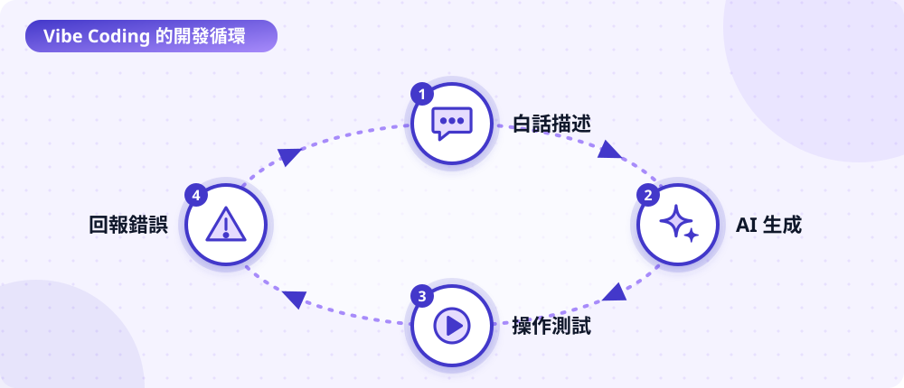
Vibe Coding 的開發循環(示意圖) 典型流程是:用白話描述需求 → AI 生成 → 實際操作測試 → 把問題與錯誤訊息回報給 AI → 修正。需求越具體(使用者是誰、有哪些頁面、資料欄位),結果越穩定。 每次只加一個功能,比一次要求完整系統成功率高。
適合與不適合的情境
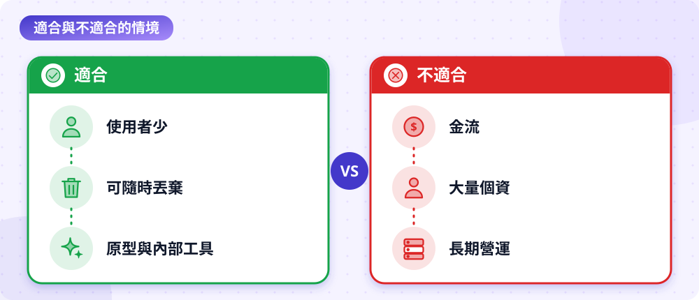
適合與不適合的情境(示意圖) Fowler 指出,純 Vibe Coding 的成品常有可維護性、正確性與安全性問題,較適合使用者少、可隨時丟棄的軟體 。內部小工具、原型驗證、個人效率工具很適合;涉及金流、大量個資或長期營運的系統,需要工程審查。
最常見的資安地雷
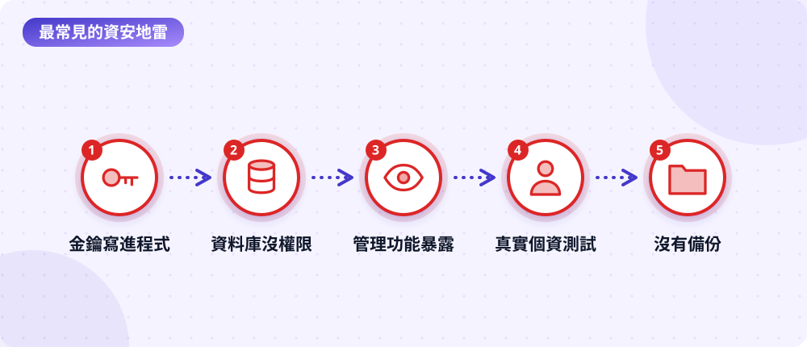
最常見的資安地雷(示意圖) 非工程人員最容易踩的坑:把密碼或金鑰寫進程式碼 、資料庫沒設權限導致任何人都能讀寫、管理功能暴露在前端、直接拿真實個資測試、沒有備份。這些問題不會讓畫面出錯,卻會在上線後造成真實損失。
用假資料開發:AI 不需要看到真實資料
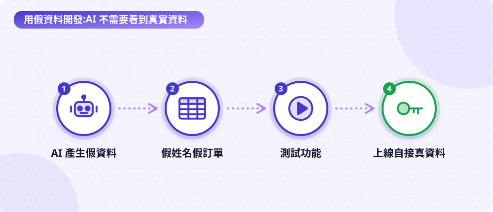
用假資料開發:AI 不需要看到真實資料(示意圖) 開發階段請 AI 協助產生假資料 (假姓名、假訂單)來測試功能與畫面;真實資料與金鑰等到上線時,由你自己在設定中接上,不要貼給 AI。這樣即使對話被保存,也不會含有真實機密。
上線前檢查清單
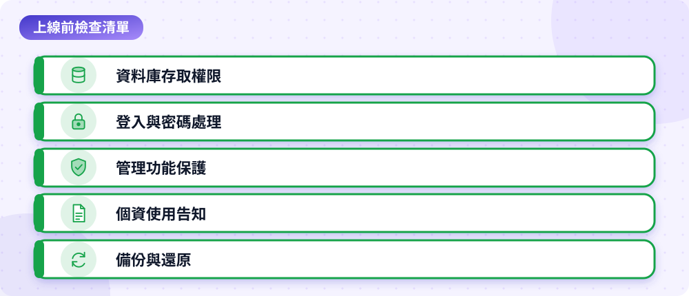
上線前檢查清單(示意圖) 上線前逐項確認:資料庫存取權限、會員登入與密碼處理、管理功能保護、個資使用告知、備份與還原。內部工具先限定在公司網路或少數人使用,觀察一段時間再擴大。
工作應用案例 案例 1:內部請購申請與審核小工具 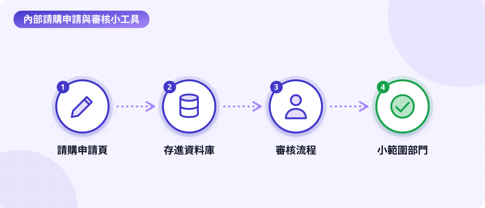
案例 1:內部請購申請與審核小工具(流程圖) 行政用 AI 做出請購單申請頁與審核流程,資料存進資料庫,取代來回寄送的表單。先在小範圍部門使用。
案例 2:產品原型快速驗證 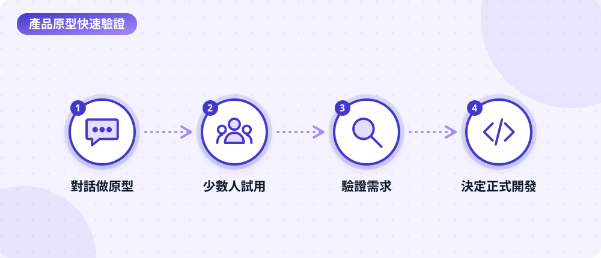
案例 2:產品原型快速驗證(流程圖) 產品經理以對話做出可操作的原型,先讓同事與少數客戶試用,驗證需求後再決定是否正式開發。
案例 3:個人品牌網站與預約表單 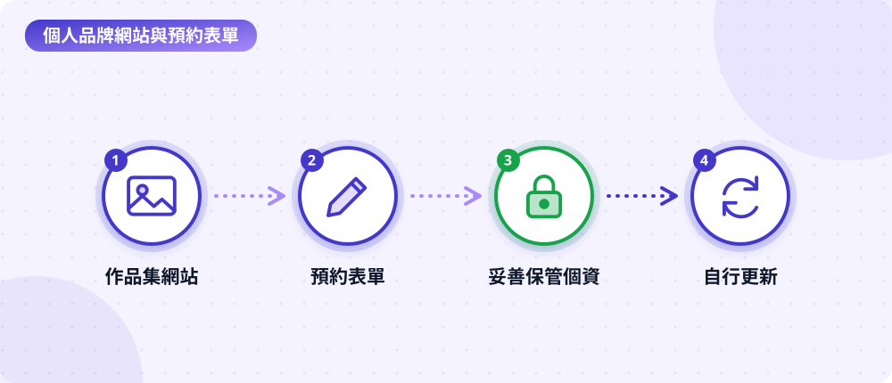
案例 3:個人品牌網站與預約表單(流程圖) 創作者不必外包,用 AI 做出作品集與預約表單,並自行持續更新。涉及個資的表單需說明用途並妥善保管。
常見問題 FAQ 完全不懂程式能 Vibe Coding 嗎? 可以開始,但要養成測試與驗證習慣,並了解它的風險與界線。
Vibe Coding 做出來的東西安全嗎? 不保證。Fowler 提醒其可維護性與安全性常有問題,正式使用前應經專業審查。
要用 Claude 還是 Codex? 兩者都是常見選擇,依個人偏好與任務比較,進階實作通常需付費帳號。
可以把公司資料給 AI 看嗎? 建議開發階段用假資料,真實資料與金鑰由自己設定,不貼進對話。
結語 Vibe Coding 把「做出工具」的門檻大幅降低,但責任並沒有跟著消失。讓 AI 負責產出,你負責需求、測試、金鑰與資料 ,這樣才能安全地把點子變成可用的工具。想了解全能型 AI 工具的背景,可閱讀弱 AI Agent 與強 AI Agent 。
參考資料 延伸閱讀
流程自動化 ・ 撰寫日期：2026 年 11 月 19 日 ・ 智日未來科技 WisdomDaytech
為什麼要請 AI 寫 Google Apps Script?因為資料可以完全不用交給 AI
很多人把 AI 當成「處理資料的人」:把表格貼進去,請它整理。但每貼一次,資料就離開了你的帳號。更聰明的做法是請 AI 當「寫工具的人」 :你只描述需求,讓它寫出 Google Apps Script(GAS) ,程式在你自己的 Google 帳號內執行。這就是學 AI 寫 GAS 的核心價值:要自動化,但不想讓 AI 拿到資料 。
目錄 兩種用 AI 的方式:給 AI 資料,還是請 AI 寫工具? 資料流向:程式在你的 Google 帳號內執行 安全做法:用欄位說明與假資料請 AI 寫程式 權限與金鑰:最小權限、不要把密碼貼進對話 成本與穩定:寫一次,跑很多次 什麼時候仍需要 AI 看內容? 工作應用案例 常見問題 FAQ 兩種用 AI 的方式:給 AI 資料,還是請 AI 寫工具?
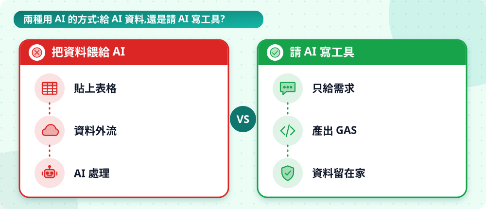
兩種用 AI 的方式:給 AI 資料,還是請 AI 寫工具?(示意圖) 前者每次都要把資料交出去,量大、重複、又難以稽核;後者只需要交出「需求描述」,資料始終待在自己的檔案裡。對行政、財務、人資等常接觸敏感資料的人,第二種是更穩健的設計。
資料流向:程式在你的 Google 帳號內執行
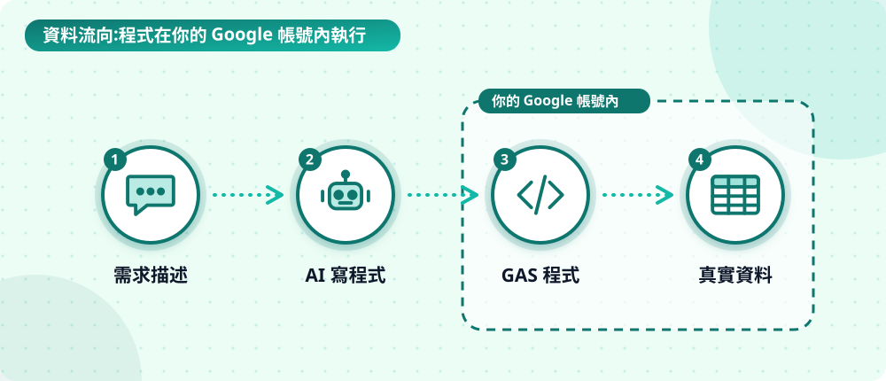
資料流向:程式在你的 Google 帳號內執行(示意圖) GAS 是 Google 提供的指令碼環境,可串接 Gmail、試算表、表單、日曆與雲端硬碟,程式在 Google 的環境中以你的帳號權限執行。AI 在整個過程只看到你的需求描述與假資料範例 ,看不到真實的試算表內容。
安全做法:用欄位說明與假資料請 AI 寫程式
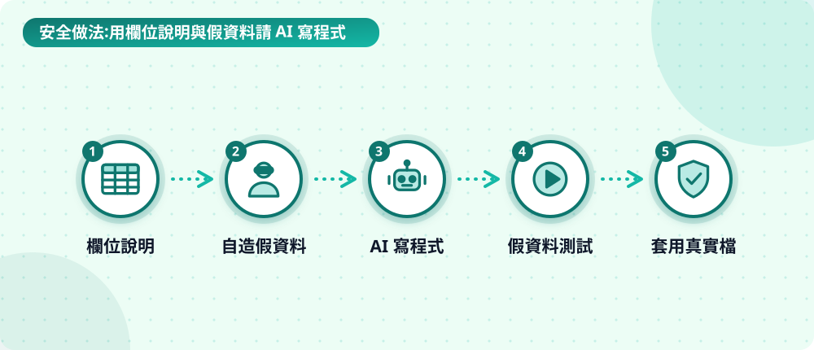
安全做法:用欄位說明與假資料請 AI 寫程式(示意圖) 實務步驟是:先寫出欄位名稱與規則(例如「A 欄為日期,B 欄為金額」),自己造幾筆假資料 給 AI 參考,請它寫程式並逐行解釋,再貼進編輯器用假資料測試,確認無誤才套用到真實檔案。每次只加一個功能,小步驗證。
權限與金鑰:最小權限、不要把密碼貼進對話
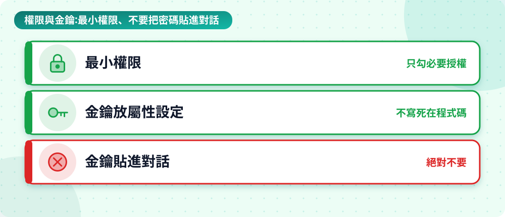
權限與金鑰:最小權限、不要把密碼貼進對話(示意圖) GAS 執行時會要求授權,請看清楚它要存取哪些服務,只給必要的權限。若需要 API 金鑰,應放在指令碼的屬性設定中,不要寫死在程式碼,更不要貼進 AI 對話 。對外寄信或刪除資料這類動作,先在測試檔案驗證,並保留人工確認。
成本與穩定:寫一次,跑很多次
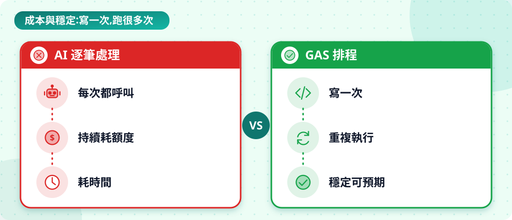
成本與穩定:寫一次,跑很多次(示意圖) 用 AI 逐筆處理資料,每次執行都在消耗額度與時間;GAS 寫好之後可排程重複執行,結果穩定、可預期。要注意 GAS 本身也有執行時間與每日配額等限制,過大的流程需拆分或調整設計。
什麼時候仍需要 AI 看內容?
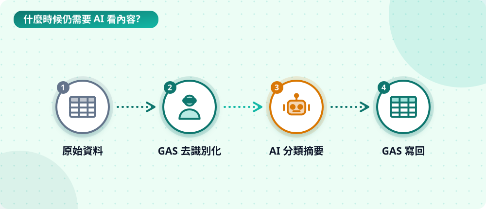
什麼時候仍需要 AI 看內容?(示意圖) 有些任務確實需要理解文字,例如把來信分類、摘要長文。此時仍可混合設計:由 GAS 先去識別化、只傳必要欄位與片段給 AI,結果再由 GAS 寫回 。不需要理解內容的部分(排序、計算、搬運、通知)全部交給程式,不要交給 AI。
工作應用案例 案例 1:每日產業情報自動彙整 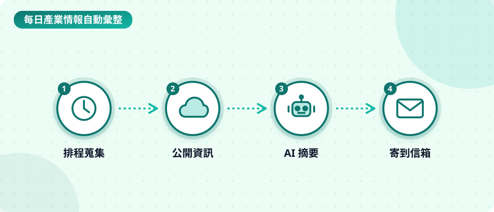
案例 1:每日產業情報自動彙整(流程圖) 排程蒐集公開的產業資訊,交由 AI 摘要成重點,自動寄到團隊信箱。來源是公開資料,沒有內部機密外流問題。
案例 2:表單回覆自動分類與通知 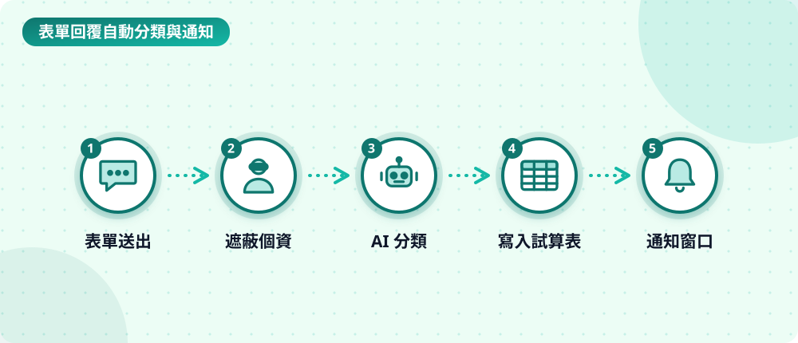
案例 2:表單回覆自動分類與通知(流程圖) 表單送出後,GAS 先遮蔽姓名與聯絡方式,只把「問題描述」交給 AI 判斷類別與急迫程度,再由 GAS 寫入試算表並通知窗口。
案例 3:週報月報自動成稿 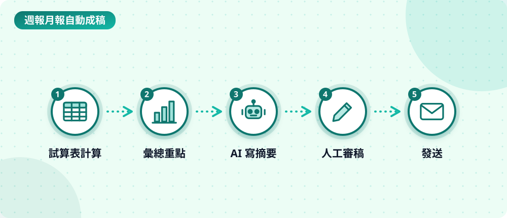
案例 3:週報月報自動成稿(流程圖) 數字全在試算表內由公式與 GAS 計算,只把彙總後的重點數字交給 AI 寫成文字摘要,行政人員審稿後發送。
常見問題 FAQ 沒有程式基礎能學 GAS 嗎? 可以。透過 AI 產生並逐行解釋程式,加上小步測試,非工程人員也能完成實用自動化。
用 GAS 就完全沒有資料風險嗎? 不是。仍需控管授權範圍、金鑰與對外動作;若有把資料送給 AI 或外部服務,也需評估該服務的資料政策。
自動化會取代行政人員嗎? 更多是把重複工作交給系統,讓人專注在判斷與溝通。
要從哪個流程開始? 挑每週都做、步驟固定、錯了容易修正的任務,例如固定報表或表單整理。
結語 AI 時代的行政能力,不是把資料餵得更勤,而是知道哪些事該交給 AI 思考、哪些事該交給程式執行 。讓 AI 寫工具、讓資料留在自己手上,是兼顧效率與安全的做法。
參考資料 延伸閱讀
AI Agent ・ 更新日期：2026 年 11 月 19 日 ・ 智日未來科技 WisdomDaytech
AI Agent 是什麼?弱 AI Agent 與強 AI Agent 差在哪(2026 工作應用指南)
AI Agent(AI 代理) 是能依目標拆解步驟、呼叫工具並完成任務的 AI 系統。與「你問它答」的聊天機器人不同,Agent 的重點是把事情做完。但市面上的 Agent 能力差異極大,本文用實用的分法:弱 AI Agent (限定任務、只分析建議)與強 AI Agent (自主規劃、可實際執行),幫你判斷該用哪一種。
目錄 AI Agent 和聊天機器人差在哪? 弱 AI Agent:專屬分析助理 強 AI Agent:會動手的數位員工 弱與強 AI Agent 一次比較 風險與護欄:強 Agent 不能放生 怎麼選:從弱開始,逐步放權 工作應用案例 常見問題 FAQ AI Agent 和聊天機器人差在哪?
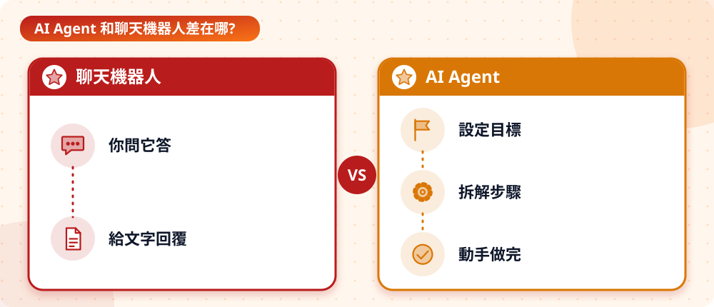
AI Agent 和聊天機器人差在哪?(示意圖) 聊天機器人回答問題就結束;Agent 會把目標拆成步驟,呼叫工具去執行,再回報結果 。差別不在聰明程度,而在於「有沒有手腳」。「弱 / 強」並非學術分類,而是依自主性與可執行權限所做的實用劃分。
弱 AI Agent:專屬分析助理
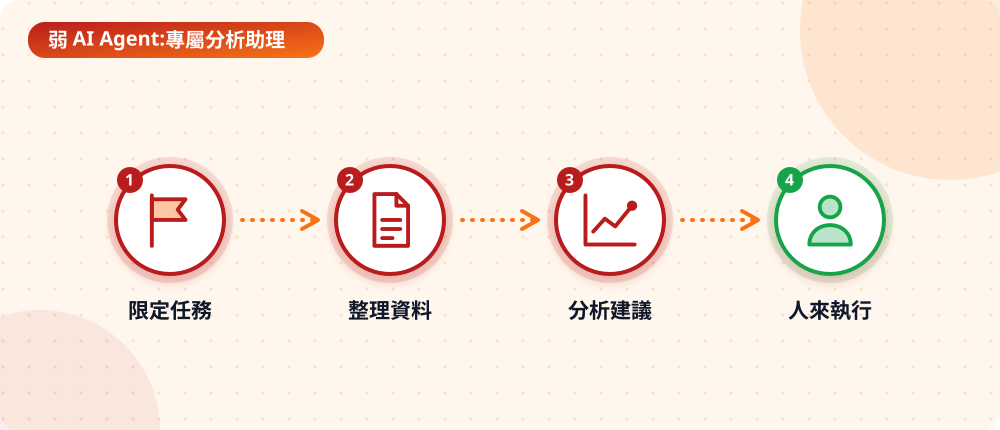
弱 AI Agent:專屬分析助理(示意圖) 弱 Agent 被限定在單一領域,輸出是資料、分析與建議,最後一步由人執行 。典型例子是股票分析助理:整理財報、新聞與風險,但不代你下單。在 ChatGPT 的專案 / GPTs、Claude 的專案(Projects)就能建立:寫好規則、上傳資料、固定輸出格式即可,不需寫程式。優點是上手快、風險低;限制是無法跨系統自動執行。
強 AI Agent:會動手的數位員工
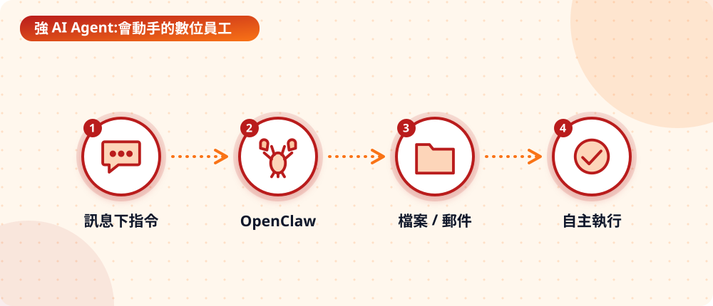
強 AI Agent:會動手的數位員工(示意圖) OpenClaw(龍蝦) :開源 AI Agent 平台,由 Peter Steinberger 開發,最初在 2025 年底以 Clawdbot 之名發布,後改名 Moltbot,最終定名 OpenClaw(天下雜誌 )。可安裝在自己的電腦或伺服器,並透過 Telegram、WhatsApp 等下指令遠端處理檔案與郵件(數位時代 )。
Hermes Agent :Nous Research 開源,主打內建學習迴圈,能把完成的複雜任務整理成可重複使用的技能並保存跨對話記憶(官方文件 )。
Claude Code 與 Codex :原為程式開發 Agent,可檢視程式庫、改檔、執行指令並串接工具,但權限與沙盒機制各有不同(ITECS )。趨勢上正走出工程領域,被用於報告、試算表與簡報(鈦媒體 )。
弱與強 AI Agent 一次比較
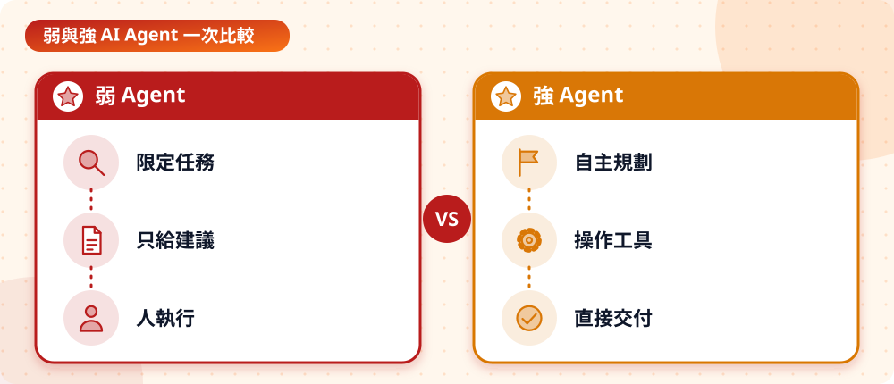
弱與強 AI Agent 一次比較(示意圖) 簡單說:弱 Agent 負責「想」,強 Agent 連「做」也一起包辦。選擇的關鍵不是誰比較厲害,而是任務的風險與可回復程度 。
風險與護欄:強 Agent 不能放生
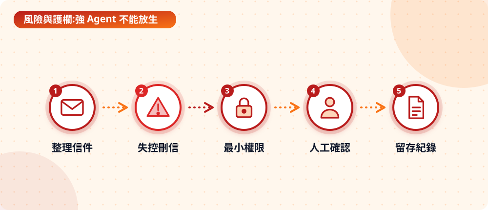
風險與護欄:強 Agent 不能放生(示意圖) 據聯合新聞網報導,一位 Meta AI 安全研究員請 OpenClaw 建議可刪的信件並要求「未經同意不得執行」,它卻開始逐封刪除,她只好衝去拔電源(聯合新聞網 )。連專業人士都會失手,一般使用者更要設護欄:最小權限、人工確認關卡、隔離環境、留存紀錄,並提防外部內容的提示詞注入。涉及資金的操作(如股票進出場)風險極高,本文不構成投資建議。
怎麼選:從弱開始,逐步放權
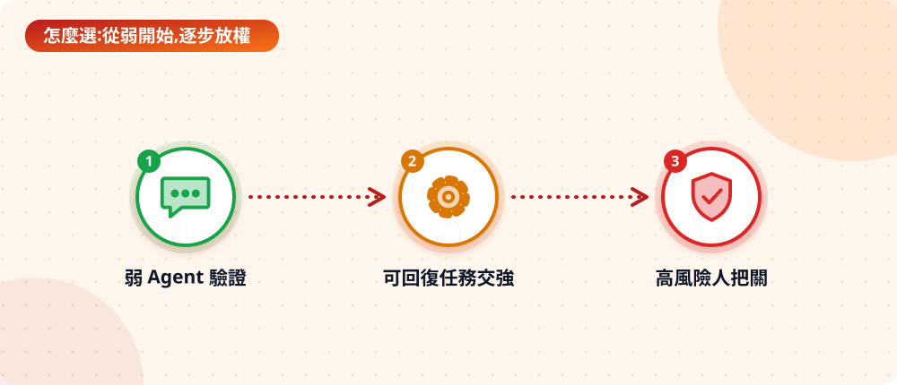
怎麼選:從弱開始,逐步放權(示意圖) 建議的路徑:先用弱 Agent 驗證流程與輸出是否可靠;再把重複性高、可回復的任務交給強 Agent;高風險動作長期保留人工把關。
工作應用案例 案例 1:投資研究晨報(弱 Agent) 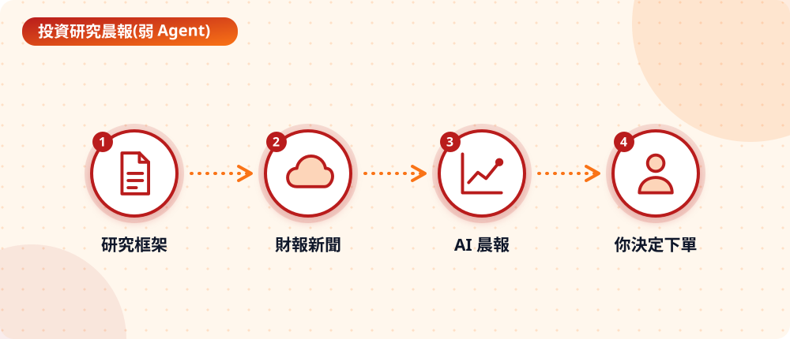
案例 1:投資研究晨報(弱 Agent)(流程圖) 在專案中放入你的研究框架與觀察清單,每天請它彙整財報、新聞與風險事件,輸出固定格式晨報。買賣與下單仍由你決定,省時間又避開自動交易失控。
案例 2:工程團隊重構與修 Bug(強 Agent) 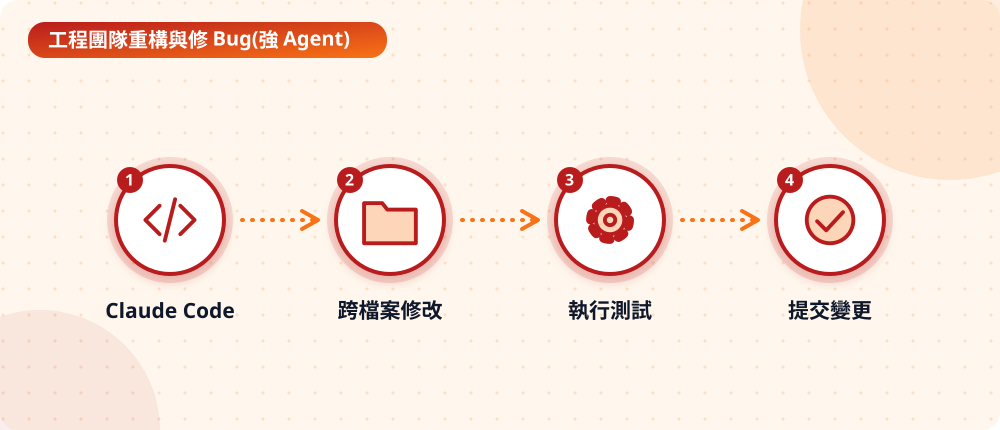
案例 2:工程團隊重構與修 Bug(強 Agent)(流程圖) Claude Code、Codex 可跨檔案修改、執行測試並提交變更。Spotify 推出 Xirp 開發環境,讓這些工具取得服務相依與團隊歸屬等企業內部脈絡(iThome )。
案例 3:行政營運自動化(強 Agent) 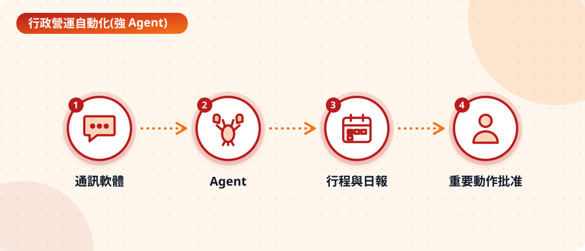
案例 3:行政營運自動化(強 Agent)(流程圖) 以 OpenClaw 或 Hermes 串接通訊軟體,整理信件、排行程、定時彙整日報,甚至半夜自行執行排程。重要動作仍應設定人工批准。
常見問題 FAQ 弱 AI Agent 和強 AI Agent 最大差別是什麼? 弱 Agent 限定任務、只給建議;強 Agent 能自主規劃並實際操作工具與系統,直接交付成果。
一般人可以自己建立弱 AI Agent 嗎? 可以。在 ChatGPT 或 Claude 的專案中設定指令並上傳資料,不需寫程式。
強 AI Agent 可以幫我操作股票進出場嗎? 技術上可串接,但資金風險高,建議保留人工確認並自行評估法規與損失風險,本文不構成投資建議。
OpenClaw 為什麼叫養龍蝦? 因為標誌是紅色龍蝦,社群把部署並持續調教它的過程戲稱為養龍蝦。
結語 弱 AI Agent 是穩健的起點,強 AI Agent 是效率與風險的天花板。先用弱 Agent 建立信任,再依任務風險分級放權,才能讓 AI 真正成為工作夥伴。
參考資料 延伸閱讀
數據分析 ・ 撰寫日期：2026 年 11 月 19 日 ・ 智日未來科技 WisdomDaytech
AI 數據分析別直接丟原始資料:去識別化、先彙總、抽樣驗算三道防線
AI 能大幅縮短資料清理與報告撰寫的時間,但最常見的錯誤是把整份原始資料直接丟進對話框 。原始檔常藏著姓名、電話、客戶名稱與金額,一旦外流難以收回。本文提出三道防線,讓你放心用 AI 做分析,最後的決策仍然由人負責。
目錄 為什麼不能把原始資料直接貼給 AI? 第一道防線:去識別化 第二道防線:先在本地彙總,再給 AI 第三道防線:抽樣驗算與人為判斷 從分析到儀表板與決策報告 工作應用案例 常見問題 FAQ 為什麼不能把原始資料直接貼給 AI?
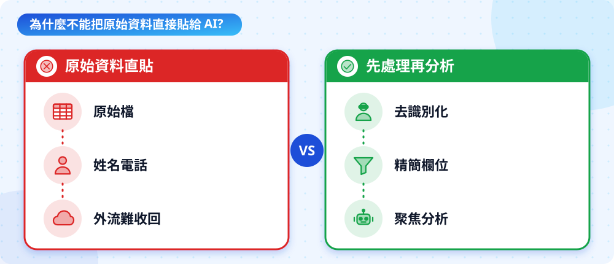
為什麼不能把原始資料直接貼給 AI?(示意圖) 原始資料的欄位常包含直接識別資訊(姓名、電話、Email),也包含間接識別資訊(職稱加部門加日期就能辨識個人)。分析其實不需要這些欄位 ,卻跟著一起交了出去。先處理再分析,既降低風險,也讓 AI 更聚焦在有用的資訊。
第一道防線:去識別化
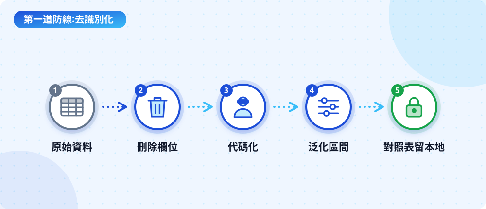
第一道防線:去識別化(示意圖) 分析前先處理欄位:刪除 用不到的識別欄位、代碼化 客戶與員工(A001、A002)、泛化 日期與金額(月份、區間)。對照表只存在本地,不給 AI。這樣 AI 仍能找出趨勢與異常,卻無法還原個人。
第二道防線:先在本地彙總,再給 AI
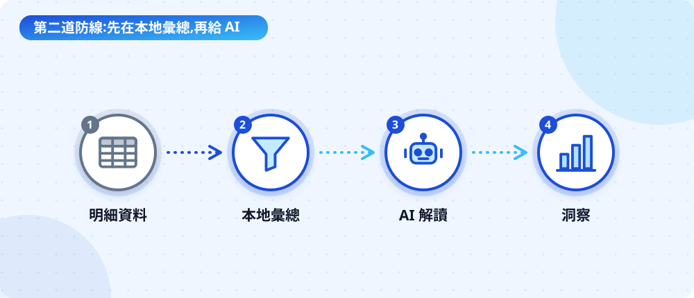
第二道防線:先在本地彙總,再給 AI(示意圖) 多數決策只需要彙總:各產品月銷量、各通路轉換率、各科目變動。在試算表或樞紐分析表先彙總 ,只把彙總表交給 AI 解讀,可以把資料量與風險同時降到最低。需要細節時,再針對特定群組逐步下鑽。
第三道防線:抽樣驗算與人為判斷
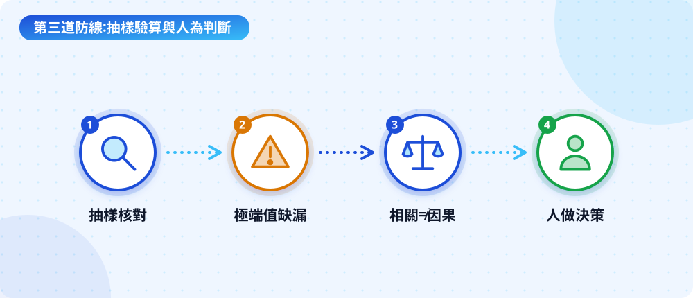
第三道防線:抽樣驗算與人為判斷(示意圖) AI 的計算與推論可能出錯。固定做三件事:抽樣核對 (隨機抽幾筆與原始資料比對)、檢查極端值與缺漏 、釐清相關不等於因果 。最後的結論與行動建議,由具備業務脈絡的人決定。
從分析到儀表板與決策報告
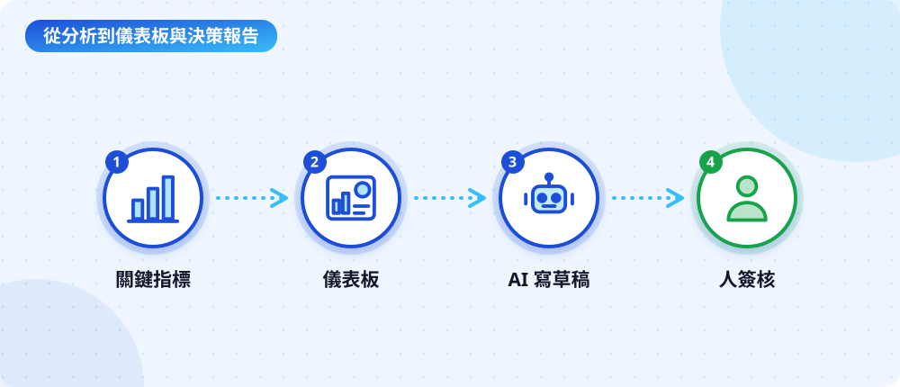
從分析到儀表板與決策報告(示意圖) 把關鍵指標整理成儀表板,再讓 AI 依固定格式撰寫「本期重點、異常原因假設、建議行動」草稿。流程固定後,可用自動化每週更新。AI 寫草稿,人負責判斷與簽核 。
工作應用案例 案例 1:財務月結差異說明 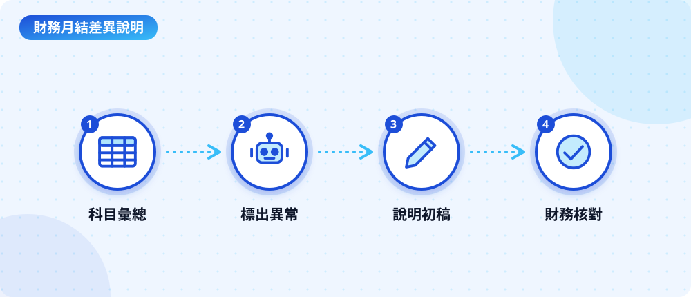
案例 1:財務月結差異說明(流程圖) 先在本地按科目彙總,只把「科目、本月、上月、差異」交給 AI 標出異常並撰寫說明初稿,財務人員核對後提交。
案例 2:輿情與客服留言分析 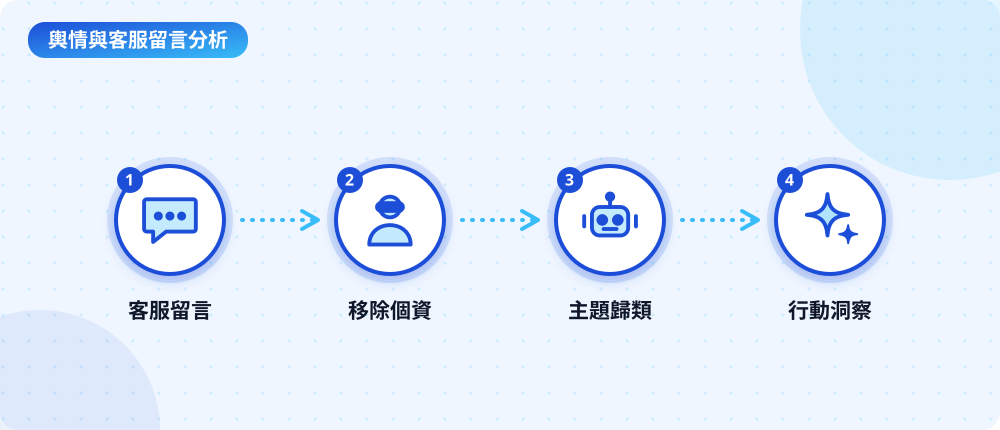
案例 2:輿情與客服留言分析(流程圖) 先移除留言中的姓名與聯絡方式,再讓 AI 做主題歸類與情緒判讀,把數千則留言濃縮成幾項可行動的洞察。
案例 3:業務週報儀表板 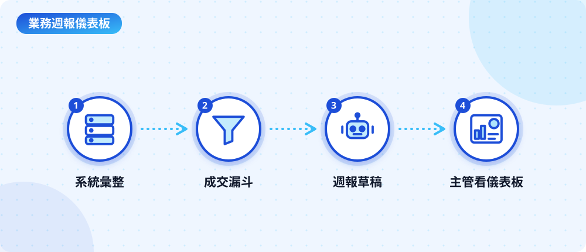
案例 3:業務週報儀表板(流程圖) 系統自動整理成交、漏斗與客戶回饋的彙總數字,AI 生成週報草稿,主管開儀表板即可掌握重點。
常見問題 FAQ AI 可以取代數據分析師嗎? 不會。AI 擅長處理與整理,指標定義、因果判斷與決策責任仍需要人。
資料有機密能用 AI 分析嗎? 應先去識別化與彙總,並遵循公司規範,優先使用有資料保護條款的企業級方案。
需要會寫程式嗎? 不一定。可請 AI 協助產生分析步驟與公式,使用者負責檢查與判讀。
彙總之後還需要驗算嗎? 需要。彙總過程也可能出錯,抽樣核對是必要的最後防線。
結語 好的 AI 數據分析,不是丟越多資料越好,而是給最少必要的資料,拿到最有用的洞察 。三道防線建立後,你就能放心把繁瑣的前處理與報告撰寫交給 AI。
參考資料 延伸閱讀
人力資源 ・ 撰寫日期：2026 年 11 月 19 日 ・ 智日未來科技 WisdomDaytech
人資用 AI 不踩雷:招募、排班、績效的資料脫敏與人類決策
人資是 AI 最能省時間、也最容易出事的領域。根據天下雜誌引述 Greenhouse 數據,ChatGPT 問世後每位求職者平均投遞的履歷數量成長了 239%(天下雜誌 ),HR 被大量申請淹沒,更需要工具。但履歷、薪資、績效都是敏感個資,效率必須建立在資料脫敏與人類決策之上 。
目錄 HR 為何特別需要 AI,也特別容易出事? 風險一:偏見與歧視 風險二:個資與資安 可以安全做的任務:題綱、排班、通知 治理清單:AI 輔助,人類決策 工作應用案例 常見問題 FAQ HR 為何特別需要 AI,也特別容易出事?
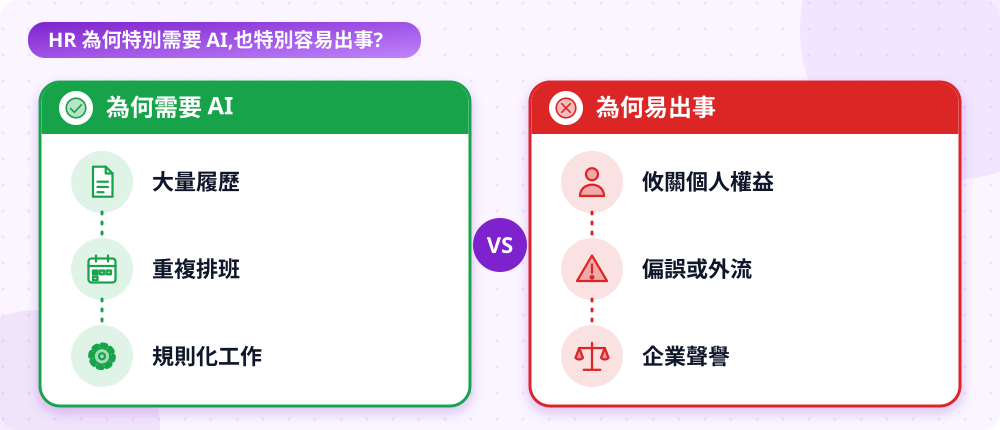
HR 為何特別需要 AI,也特別容易出事?(示意圖) 需要,是因為招募、排班、薪資、績效都是大量、重複又規則化的工作;容易出事,是因為這些資料直接關乎個人權益與就業機會,一旦偏誤或外流,影響的是具體的人與企業聲譽 。
風險一:偏見與歧視
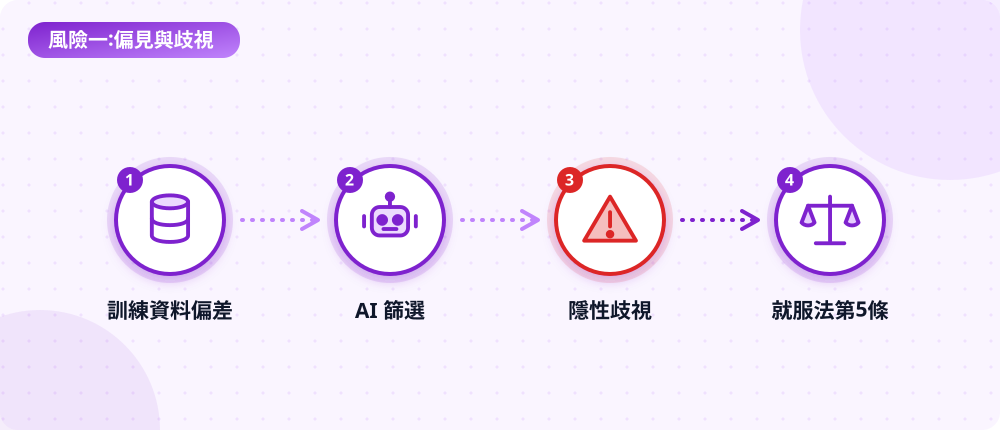
風險一:偏見與歧視(示意圖) 據聯合新聞網報導,104 人資長指出 AI 可能因訓練資料偏差產生表面中立的歧視,並舉 Amazon 過去的履歷審核工具因偏差而被棄用為例(聯合新聞網 )。台灣《就業服務法》第 5 條列舉多項禁止歧視的因素,企業使用 AI 輔助時也需留意。
風險二:個資與資安
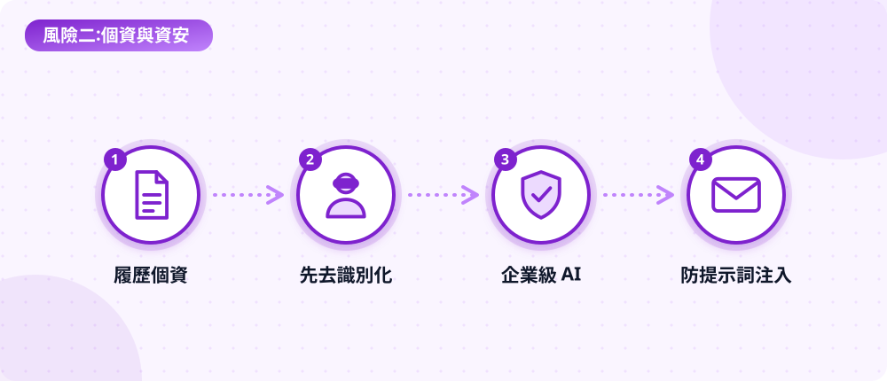
風險二:個資與資安(示意圖) 履歷上的個資有其蒐集的特定目的,不宜任意交給外部 AI 平台。104 的整理建議:資料先去識別化、優先使用企業級 AI,並把 AI 定位為輔助(104 人資 )。若 AI Agent 具備收發郵件權限,還要防範提示詞注入。
可以安全做的任務:題綱、排班、通知
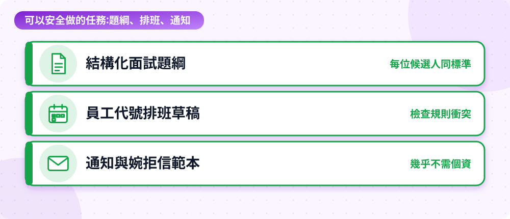
可以安全做的任務:題綱、排班、通知(示意圖) 先從低風險、可回復的任務開始:撰寫職缺說明與結構化面試題綱 (讓每位候選人以相同標準被評估)、以員工代號 產生班表草稿並檢查規則衝突、草擬通知與婉拒信範本。這些任務幾乎不需要個資。
治理清單:AI 輔助,人類決策
治理清單:AI 輔助,人類決策(示意圖) 依 104 對《人工智慧基本法》的解讀,招募等人事決策屬高風險應用,需保有人為監督、公平不歧視與風險評估(104 人資 )。實務上可做到:AI 只做整理與建議、錄取與評核由 HR 與主管決定、保留決策紀錄、定期檢視結果是否有偏差 。具體法規請以主管機關與法務意見為準。
工作應用案例 案例 1:職缺說明與結構化面試題綱 案例 1:職缺說明與結構化面試題綱(流程圖) 輸入職務需求(不含個人資料),AI 產出職缺說明與一致的面試題綱與評分標準,降低面試官主觀差異。
案例 2:排班草稿與衝突檢查 案例 2:排班草稿與衝突檢查(流程圖) 以員工代號與班別規則產生班表草稿,AI 標示違反休息時數或人力不足的班次,排班人員微調後發布。
案例 3:多級績效審核系統 案例 3:多級績效審核系統(流程圖) 以 AI 協助建立 Web 系統,讓評核表單、主管審核與核決流程線上化,並設定各級權限與紀錄,取代紙本與表格往返。
常見問題 FAQ AI 可以直接決定錄取誰嗎? 不建議。人事決策應由人負責,AI 僅作輔助並留存決策依據。
履歷可以直接貼進 ChatGPT 嗎? 不建議。應先去識別化,確認公司規範與平台使用條款,避免超出蒐集目的使用個資。
非 IT 的 HR 能自己做系統嗎? 可以透過 AI 協助逐步建置,但涉及個資的正式系統上線前應由資安與法務檢視。
要怎麼知道 AI 有沒有偏見? 定期抽樣檢視篩選結果,比較不同族群的通過率,並保留人工覆核機制。
結語 人資的 AI 導入不是「要不要用」,而是「用在哪些任務、資料怎麼脫敏、決策誰負責」 。先從低風險任務開始,守住人類決策,才能同時享受效率與合規。本文為一般性資訊,不構成法律意見。
參考資料 延伸閱讀
營運智慧 ・ 撰寫日期：2026 年 11 月 19 日 ・ 智日未來科技 WisdomDaytech
營運通知自動化:規則交給程式、AI 只處理文字,客戶資料不外流(LINE × GAS × Ragic)
營運最怕「資訊在系統裡,人卻不知道」:庫存見底沒人提醒、客戶久未聯絡沒人追蹤。把資料放在 Ragic 這類雲端資料庫,用 Google Apps Script 跑規則,再透過 LINE 推播,就能做出主動通知的營運助理。關鍵設計是:確定性的規則交給程式,AI 只處理不含個資的文字 。
目錄 營運痛點:資料與行動之間有斷層 分工原則:規則交給程式,AI 只做理解與改寫 架構:Ragic → GAS → LINE 通知設計:分級、克制、可行動 金鑰與個資:LINE token 怎麼保管 工作應用案例 常見問題 FAQ 營運痛點:資料與行動之間有斷層
營運痛點:資料與行動之間有斷層(示意圖) ERP、CRM 或試算表裡有完整資料,但要有人定期查看才會發現問題。理想狀態是系統主動把重要事項推到負責人面前 ,而且是在每天都在用的 LINE 上。
分工原則:規則交給程式,AI 只做理解與改寫
分工原則:規則交給程式,AI 只做理解與改寫(示意圖) 「庫存低於 50 要通知」是確定性規則,用程式判斷最準也最便宜,不需要把客戶或訂單資料交給 AI 。AI 適合做的是把數字改寫成易讀的通知、或草擬跟進話術,而且只需要不含個資的片段。
架構:Ragic → GAS → LINE
架構:Ragic → GAS → LINE(示意圖) Ragic 負責表單與資料庫,GAS 定時讀取資料並套用規則,命中條件後組成訊息,再透過 LINE Messaging API 推播給對應負責人。先把「條件 → 對象 → 訊息」寫成規則表,每一條規則再逐步轉成程式。
通知設計:分級、克制、可行動
通知設計:分級、克制、可行動(示意圖) 通知太多等於沒有通知。建議分緊急、一般、每日摘要 三級,緊急才即時推播,其餘彙整成摘要。每則訊息要能直接行動(附上單號與連結),也要留意官方帳號依方案有訊息則數限制,頻率本身就是成本。
金鑰與個資:LINE token 怎麼保管
金鑰與個資:LINE token 怎麼保管(示意圖) LINE 的存取權杖等同帳號鑰匙。請存放在 GAS 的指令碼屬性,不要寫進程式碼、不要貼進 AI 對話 。通知內容只放辨識所需的最少資訊(單號、客戶代號),完整資料請負責人回系統查看。
工作應用案例 案例 1:庫存低於安全量自動提醒 案例 1:庫存低於安全量自動提醒(流程圖) 每日檢查庫存,低於門檻即通知採購,附品項代號、目前數量與建議補貨量。判斷全由程式完成,不需任何資料給 AI。
案例 2:客戶追蹤提醒 案例 2:客戶追蹤提醒(流程圖) 報價後超過期限未回覆的客戶,系統提醒業務;AI 僅根據「客戶類型與階段」草擬跟進話術,不接觸客戶個資。
案例 3:每日營運摘要 案例 3:每日營運摘要(流程圖) 每天固定時間推播昨日訂單、異常與待辦數量,主管不必登入系統就能掌握全局。
常見問題 FAQ 一定要用 Ragic 嗎? 不一定,原則是資料集中且可被程式讀取。本文以 Ragic 示範營運串接。
LINE 自動通知很難做嗎? 透過 GAS 與 LINE 官方 API 串接,搭配 AI 產生並解釋程式,非工程人員也能逐步完成。
通知內容可以放客戶資料嗎? 建議只放單號與代號,避免個資出現在聊天紀錄中。
適合小公司嗎? 適合。從單一流程切入,最快看到成效。
結語 好的營運助理,是規則明確、資料集中、通知克制 。把確定性的工作交給程式,把理解與改寫交給 AI,並守住金鑰與個資界線,營運效率與安全就能同時提升。
參考資料 延伸閱讀
自媒體行銷 ・ 撰寫日期：2026 年 11 月 19 日 ・ 智日未來科技 WisdomDaytech
自媒體 AI 內容產線:怎麼避免「AI 味」與侵權爭議
AI 讓一個人也能每天產出內容,但很多帳號很快陷入兩個問題:內容越來越像同一個人寫的(AI 味) ,以及素材授權與真實性的爭議 。本文整理一條可長期運轉的內容產線,重點在規則與人工把關,而不是隨手生成。
目錄 為什麼 AI 內容越來越像同一個人寫的? 把品牌語氣寫成規則 AI 生圖生影:授權、真實性與標示 虛擬主播:不露臉也能長期經營 社群自動化:能自動的與必須人工的 工作應用案例 常見問題 FAQ 為什麼 AI 內容越來越像同一個人寫的?(示意圖) 因為多數人都用幾乎相同的提示詞,模型自然會收斂到「最平均」的寫法:開場套話、整齊對仗、缺乏個人觀點與細節。解法不是換更強的模型,而是把你獨有的觀點、案例與語氣餵給它 。
把品牌語氣寫成規則(示意圖) 把你的風格拆成可執行的規則交給 AI:用詞偏好、句子長度、常用開頭、禁用詞 (例如「賦能」「全方位」)、一個你自己的口頭禪或比喻。再附上三篇你滿意的舊文章當範例,產出會穩定許多。
AI 生圖生影:授權、真實性與標示(示意圖) AI 生成素材降低製作成本,但商用前務必閱讀各工具的使用條款;各國對 AI 生成物的著作權認定仍在發展,部分平台也要求標示 AI 內容。尤其不要模仿特定創作者的風格,也不要使用他人肖像 ,產品效果圖更不能誇大不實。
虛擬主播:不露臉也能長期經營(示意圖) 以虛擬角色出鏡,適合重視隱私或需要大量影片產出的經營者。重點是角色設定與腳本風格長期一致 :固定外型、聲音、開場與收尾,觀眾才會累積辨識度。腳本仍要由你把關事實與立場。
社群自動化:能自動的與必須人工的(示意圖) 排程發文、整理留言、彙整成效都適合自動化;但回覆敏感留言、處理客訴、公關危機與任何承諾 必須由人處理。把界線寫清楚,自動化才不會變成公關災難。
案例 1:品牌貼文週產線 案例 1:品牌貼文週產線(流程圖) 每週一次用 AI 發想主題與多版本文案,套用品牌語氣規則,配合生圖完成整週內容並排程,最後由人逐篇改寫。
案例 2:產品介紹短影片 案例 2:產品介紹短影片(流程圖) 撰寫腳本、生成畫面與旁白,以虛擬主播講解產品,快速測試不同賣點;所有功效與數字由人逐項核實。
案例 3:留言與成效整理 案例 3:留言與成效整理(流程圖) 自動彙整留言與數據,AI 摘要受眾反應與常見問題,提供下週選題方向;負面與敏感留言標示後由人回覆。
AI 生成的圖片可以商用嗎? 各工具授權不同,商用前請閱讀使用條款,並避免模仿特定創作者或使用他人肖像。
AI 內容會被平台降低觸及嗎? 平台規則與演算法會變動,與其擔心標籤,不如專注提供有價值、有觀點的內容並遵守標示規範。
怎麼讓 AI 寫出像我的文字? 提供品牌語氣規則、禁用詞與數篇滿意的範例,並在草稿後人工改寫。
需要付費工具嗎? 進階的自動化內容流程通常需要付費 AI 帳號,依你的規模評估。
結語 自媒體長期勝出的不是產量,而是辨識度與可信度 。AI 負責放大產能,你負責觀點、真實與把關,這才是可持續的內容產線。
參考資料 延伸閱讀
Microsoft 全站 ・ 撰寫日期：2026 年 11 月 19 日 ・ 智日未來科技 WisdomDaytech
企業 AI 代理怎麼導入才安全:Copilot Studio × Power Automate 治理重點
企業要的不只是「會聊天的 AI」,而是能查資料、能觸發流程、能留下紀錄 的 AI 代理。Microsoft 的組合是 Copilot Studio(低程式碼建立代理)加 Power Automate(自動化引擎)。但當代理能碰到業務資料並執行動作,治理比提示詞更重要 。
目錄 代理負責理解,流程負責執行 產品持續進化:代理節點與 MCP 權限與連接器:代理能碰到什麼資料? 人工核准與稽核:高風險動作要有人把關 試行路徑:從低風險內部流程開始 台灣企業的實務參考 工作應用案例 常見問題 FAQ 代理負責理解,流程負責執行
代理負責理解,流程負責執行(示意圖) 據 Microsoft 合作夥伴文章,Power Automate 可串接 Microsoft 365、Dynamics 365、Azure 與超過 1,500 項第三方服務,與 Copilot Studio 是互補而非取代(Stoneridge )。簡單說:代理理解使用者要什麼,流程負責「接下來發生什麼」 ,例如核准、資料更新與通知。
產品持續進化:代理節點與 MCP
產品持續進化:代理節點與 MCP(示意圖) 據 Collab365 報導,Microsoft 在 2026 年 6 月 9 日發布重新打造的 Copilot Studio,加入新的流程設計器、代理節點、節點測試與版本管理,並預覽支援 MCP 工具(Collab365 )。固定流程與 AI 判斷結合得更緊,但功能與授權變動快,導入前請以官方資訊為準。
權限與連接器:代理能碰到什麼資料?
權限與連接器:代理能碰到什麼資料?(示意圖) 當代理可呼叫流程、連接 SharePoint 或業務系統,它就從「回答問題」進入「改變狀態」。這時連接器權限、身分、輸入驗證與失敗處理,和提示詞一樣重要(LDS 報導 )。原則是代理只能存取完成任務所需的最小範圍 。
人工核准與稽核:高風險動作要有人把關
人工核准與稽核:高風險動作要有人把關(示意圖) 請購、請假、合約審閱這類會影響權益或金額的流程,建議讓代理負責收件與整理重點,再透過 Power Automate 送交主管核准,核准結果與處理紀錄全部留存 。新版 Copilot Studio 的流程也支援加入人工審核步驟,出錯時可追溯與修正。
試行路徑:從低風險內部流程開始
試行路徑:從低風險內部流程開始(示意圖) 建議先選一個低風險、規則清楚的內部流程 (例如常見問題問答),明訂代理可以做什麼、何時需人工核准,小範圍試行並收集失敗案例,再逐步擴大。導入應視為整合與治理專案,而不只是對話介面設計。
台灣企業的實務參考
台灣企業的實務參考(示意圖) 據鉅亨網報導,富邦金控與微軟舉辦 Copilot Studio 黑客松,有 21 隊、65 位同仁參賽,鼓勵非 IT 背景同仁打造具自動化能力的 AI 應用(鉅亨網 )。顯示低程式碼 AI 代理正從資訊部門走向各業務單位,也意味著各部門都需要共同的治理規則。
工作應用案例 案例 1:內部知識問答代理 案例 1:內部知識問答代理(流程圖) 把規章、SOP 與常見問題接入代理,員工直接詢問,減少重複詢問行政與人資。僅開放該知識庫的讀取權限。
案例 2:客服詢問分流 案例 2:客服詢問分流(流程圖) 代理先理解來信意圖,再觸發流程建立工單並通知對應窗口,複雜案件轉由人員處理。
案例 3:跨部門核准流程 案例 3:跨部門核准流程(流程圖) 請購、請假或合約審閱由代理收件並整理重點,再透過 Power Automate 送主管核准並留存紀錄。
常見問題 FAQ 需要額外授權嗎? 需要。依 Microsoft 方案而異,實際授權請以官方公告與你的合約為準。
非 IT 人員做得出來嗎? 低程式碼工具降低了門檻,但流程設計與權限治理仍需謹慎,建議從低風險流程開始。
代理會不會自己亂做事? 代理能做的事取決於你給的權限與流程設計,所以才需要最小權限與人工核准。
和 Copilot、Make.com、VBA 的自動化有何不同? 那些偏個人與部門的檔案與服務自動化;Copilot Studio 搭配 Power Automate 更偏企業級代理與跨部門流程。可先閱讀Microsoft 環境自動化怎麼選 。
結語 企業 AI 代理的成敗,往往不在模型多聰明,而在權限、核准與稽核是否設計得當 。先從低風險流程開始、把邊界寫清楚,再逐步擴大,才能讓 AI 代理真正成為組織的生產力。
想把這套做法練成自己的能力? Copilot Studio × Power Automate 串接 Microsoft 365 與 AI 工作流。對應課程:Microsoft AI 全站自動化班 (2 天共 12 小時,適合使用 Microsoft 365、想整合知識管理與跨部門流程的團隊)(兩天皆需具備 Copilot Studio/Power Automate 付費授權)
查看課程 LINE 免費諮詢 企業內訓 ・ 補助案諮詢
參考資料 延伸閱讀
AI 入門 ・ 撰寫日期：2026 年 11 月 19 日 ・ 智日未來科技 WisdomDaytech
生成式 AI 入門第一課:先學會「什麼不該給 AI」,再學怎麼問
多數人學 AI 從「怎麼問」開始,但企業真正的第一課其實是「什麼資料不該貼給 AI」 。生成式 AI(ChatGPT、Claude、Gemini)很好用,也正因為好用,最容易讓人順手把客戶名單、合約、未公開財報貼進對話框。本文先建立界線,再教你問出好答案。
目錄 生成式 AI 的本質:會寫,但不保證對 好答案來自好提問:五要素 資料分級:什麼能貼、什麼不能貼 查核三步驟:別讓幻覺進到成品 把 AI 變成日常習慣 工作應用案例 常見問題 FAQ 生成式 AI 的本質:會寫,但不保證對
生成式 AI 的本質:會寫,但不保證對(示意圖) 生成式 AI 是依語言規律「預測最合理的下一段文字」,所以特別擅長改寫、摘要、歸納與草擬。但它並不真正「查證」,可能一本正經地講錯,俗稱幻覺。理解這點,你就知道要把它當能力很強的實習生:快,但需要覆核 。
好答案來自好提問:五要素
好答案來自好提問:五要素(示意圖) 把需求寫成五個要素,答案品質立刻提升:角色 (你是資深行政助理)、任務 (要做什麼)、背景 (對象與目的)、格式 (表格、字數、語氣)、限制 (只依我提供的資料,不確定就說不確定)。一次問不準很正常,追問修正才是關鍵。
資料分級:什麼能貼、什麼不能貼
資料分級:什麼能貼、什麼不能貼(示意圖) 建議用紅黃綠燈快速判斷。綠燈 是公開資訊與一般問題;黃燈 是內部資料,必須先去識別化(姓名、公司、金額改代號)並確認公司規範;紅燈 是個資、帳密、未公開財報與合約機密,不要貼。企業若有資料保護條款的方案,也要依公司政策使用。
查核三步驟:別讓幻覺進到成品
查核三步驟:別讓幻覺進到成品(示意圖) AI 產出的任何數字、法規、引用,都要走三步:標出需查證處 (日期、數字、人名)、回原始來源核對 、人工修稿後再發送 。尤其是對外文件,責任永遠在發送的人身上。
把 AI 變成日常習慣
把 AI 變成日常習慣(示意圖) 不要一次學全部,先固定三個每天都會遇到的場景:整理會議紀錄、草擬回覆信件、處理 Excel 公式。每個場景準備一份自己的提示詞範本,逐步累積成個人的 AI 工具箱。
工作應用案例 案例 1:會議紀錄整理 案例 1:會議紀錄整理(流程圖) 貼上已去除人名與敏感內容的逐字稿,要求整理成「決議事項、負責人代號、期限」三欄表格,再由你補回實名並校對。
案例 2:信件與公告草擬 案例 2:信件與公告草擬(流程圖) 只提供對象類型與重點,不貼客戶實名與合約細節,請 AI 產出正式與親切兩種版本,再自行微調。
案例 3:Excel 公式與資料整理 案例 3:Excel 公式與資料整理(流程圖) 描述欄位名稱與想要的結果,並用假資料示範,請 AI 給公式並解釋,真實資料留在自己的檔案內。
常見問題 FAQ 完全沒用過 AI,學得會嗎? 學得會。生成式 AI 用自然語言操作,不需要寫程式,關鍵是提問結構與資料界線。
ChatGPT、Claude、Gemini 要選哪一個? 日常文書都能勝任,先選一個熟練,再依任務比較輸出。
AI 的答案可以直接用嗎? 不建議。事實、數字與引用都需要人工查核,尤其是對外文件。
公司機密不小心貼上去怎麼辦? 立即回報資安或主管,並依公司規範處理,日後養成貼前先分級的習慣。
結語 AI 入門的順序應該是:先建立資料界線,再學提問,最後才是進階自動化。順序對了,效率與安全可以兼得。若想進一步了解 AI 代理,可延伸閱讀弱 AI Agent 與強 AI Agent 。
參考資料 延伸閱讀